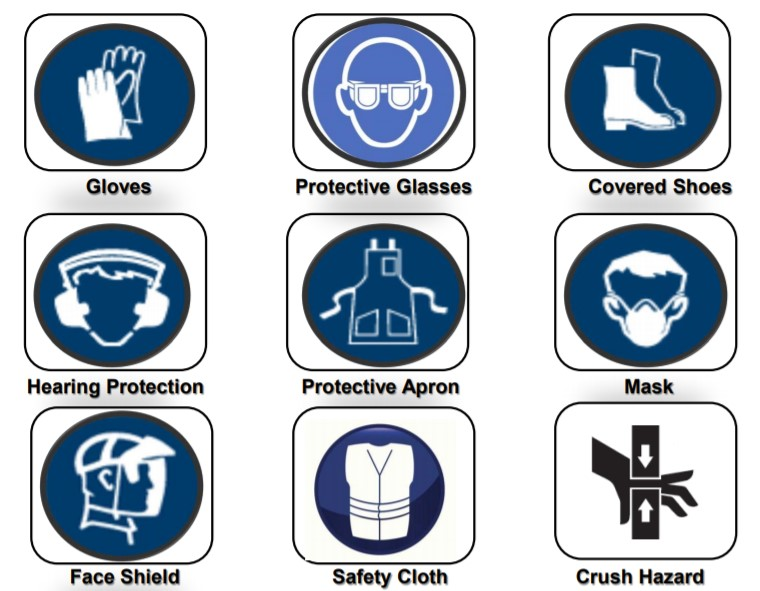

FabLab Safety
Welcome to FabLab! A FabLab, or digital fabrication laboratory, is a place to play, to create, to mentor and to invent: a place for learning and innovation. Fab Labs provide access to the environment, the skills, the materials and the advanced technology to allow anyone anywhere to make (almost) anything.
While you dive deep into your creation with the resources provided
in the working space of FabLab, you are still potentially exposed to
dangers around you.
Emergerncy Procedure
In the event of emergency, assistance may be summoned:
- For Ambulance call 995
- For SCDF call 995
- For Police call 999
- For all emergencies and incident reporting call SP Emergency hotline 6772-1234
- Name of caller
- Location (block and room number)
- Nature of emergency (e.g. fire, explosion, violent or abusive behaviour, etc.)
- Report all work related injuries, no matter how minor, promptly to technical support staff or supervising staff.
- Contact the school’s general office, 67721206 or call 67721234 when treatment to injury is required.
- Do not leave injury unattended or without treatment.
Attire
 Male Attire
Male Attire
 Female Attire
Female Attire
Safety Information
 Example of Placards in FabLabs
Example of Placards in FabLabs
 Warning Hazards
Warning Hazards
 Personal Protection Equipments (PPE)
Mechanical & Non-Mechanical Hazards
Mechanical Hazards
- Entanglement Hazards
- Cutting Hazards
- Impact Hazards
- Shearing Hazards
- Crushing Hazards
- Draw-in Hazards
- Friction and Abrasion Hazards
- Fall from Heights Hazards
- Noise Hazards
- Electrical Hazards
- Heat-related Hazards
- Chemical Hazards
- Fatigue
- Ergonomic Risk Factors